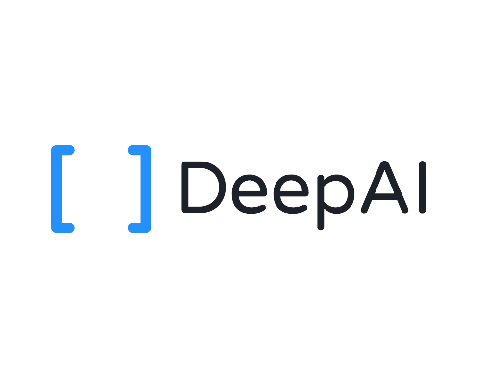
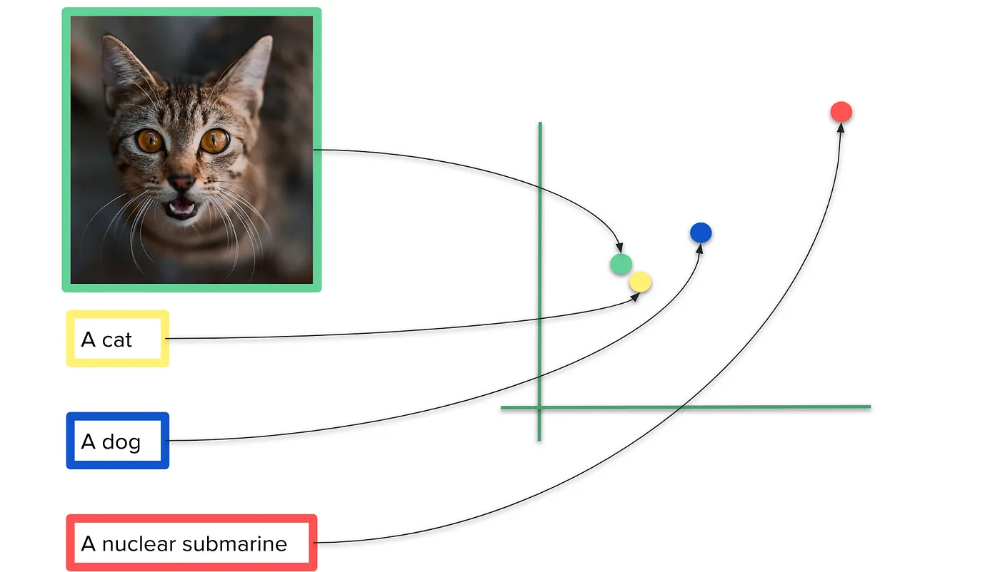

class: center, middle # Generative AI For Games  ### by Kevin Baragona ### @kevinbaragona --- # The Big Picture ### As of 2022-2023, Generative AI learns from vast quantities of unlabeled human data. ### The AI learns from this data to produce human-like outputs. This works for nearly any type of content, including: text/dialogue, images, video, audio, and more. --- # How Text-To-Image Models Work We need a training dataset of millions of image and caption pairs. This is the only data needed to train the model to generate images from text. <img src="images/diffusion architecture.png" width="100%"> --- **Image Encoder**: Translates training images to vectors in a latent space for further processing. The latent space is a mathematical space where the image information can be represented as vectors (i.e. arrays of numbers) **Text Encoder**: Translates text into high dimensional vectors (you can think of them as arrays of numbers that represent the meaning of the texts) that machine learning models can understand. **Diffusion model**: Generates new images in the latent space, conditioned by the text guidance (i.e. the input text guides the generation of images in this latent space) **Image Decoder**: Translates the image information in the latent space to an actual image constructed with pixels. --- # Text Encoder <img src="images/text encoder.png" width="100%"> --- # CLIP text and image embeddings CLIP maps images and text into a shared latent space where the similarity of the representations indicates similarity of the content.  --- # Large Language Models <img src="images/language model decoder.png" width="70%"><br/> Large language models are complex deep learning functions that map a context of input text tokens to output a probability distribution of the next token in the sequence. This probability distribution can be decoded into a text token, which can then be appended to the input context to generate a longer sequence. --- # OpenAI Language Models ### Currently, OpenAI's text (language) models are the most advanced. OpenAI offers many different models. The most important are: GPT3.5 GPT3.5-turbo (default model of ChatGPT) GPT4 --- ## GPT3.5-turbo is fast and cheap and very capable It's the default model of ChatGPT ## GPT4 is newer and smarter It's more expensive It's slower It's far smarter and more capable. It has advanced reasoning and programming capabilities! I sometimes call it "basically a brain" --- # Both GPT3.5 and GPT4 are available via OpenAI API This allows you to easily build their capabilities into your own app. The API requests are JSON and output JSON. --- # The API supports "streaming" mode This allows you to show the output as it is generated. It is a little more complex call the API in streaming mode, but not super hard. They use something called "Server Sent Events" for streaming --- # API calls take in chat history: ## 3 types of messages: ### system prompt ### user messages ### assistant messages ## Then the API outputs one assistant response --- # Other API parameters: ## Temperature * Controls the amount of randomness/creativity in the response * Value between 0 and 2 (show temperature demo) ## max_tokens - limits the size of outputs --- # OpenAI Pricing Model Prompt Completion GPT4-8K context $0.03 / 1K tokens $0.06 / 1K tokens Model Usage gpt-3.5-turbo $0.002 / 1K tokens --- # Generative AI use cases in Games * Dynamic storytelling * Generate character art * Generate music * Generate NPC behavior and dialogue * Write code for your game (eg, Copilot, GPT4) --- # Let's build a game We'll use both image and text generation to build a role playing game. Let's see how much of the game can be built with AI. Tools Used: * DeepAI API (for text-to-image) * OpenAI API (for text generation) * Python/Flask (for web app) * HTML/CSS/JS (for web app) * Replit (for sharing demo) --- ### Prompt engineering write 1-sentence bio's of 5 random characters in a role-playing game. the characters should have a name. respond as a JSON array with keys "name", "bio". [ {"name": "Aelar Rivenhart", "bio": "A master archer and Elf princess who takes command of the wind and strikes every weakness of her enemies."}, {"name": "Cynthia Brighthelm", "bio": "A quirky Human mage with a happy demeanor, turning her adversaries' spells against them."}, {"name": "Argis the Bold", "bio": "King of the Dwarves, Argis fights with honor and commands his people with his indestructible hammer."}, {"name": "Xirala Shadowdancer", "bio": "A sultry Tiefling rogue who can shift between the shadows, stealing without a trace."}, {"name": "Baelgor Earthsplitter", "bio": "A wise Gnome druid with a deep connection to nature, wielding the earth itself as a weapon."}, {"name": "Elara Nightstar", "bio": "A celestial Aasimar Cleric called to heal and protect the faithful, her radiance blinding enemies."}, {"name": "Fizzlewick McFlambe", "bio": "An impulsive Halfling pyromancer who sets fire to the battlefield, leaving a trail of ashes in his wake."}, ]`; --- write a list of 20 varied and popular movies and books that would form an interesting base for a turn based role playing game, starting with "The Shining" by stanley kubrick. 1. "The Shining" by Stanley Kubrick 2. "Inception" directed by Christopher Nolan 3. "The Lord of the Rings" trilogy by J.R.R. Tolkien 4. "The Matrix" series directed by The Wachowskis 5. "Harry Potter" series by J.K. Rowling 6. "The Godfather" by Mario Puzo 7. "Pirates of the Caribbean" directed by Gore Verbinski 8. "Star Wars" franchise created by George Lucas 9. "Jurassic Park" by Michael Crichton 10. "The Chronicles of Narnia" by C.S. Lewis 11. "The Hunger Games" series by Suzanne Collins 12. "The Silence of the Lambs" by Thomas Harris 13. "Fight Club" by Chuck Palahniuk 14. "Indiana Jones" series directed by Steven Spielberg 15. "The Wizard of Oz" by L. Frank Baum 16. "Alice in Wonderland" by Lewis Carroll 17. "The Avengers" series created by Marvel Studios 18. "Blade Runner" directed by Ridley Scott 19. "The Dark Tower" series by Stephen King 20. "Ender's Game" by Orson Scott Card